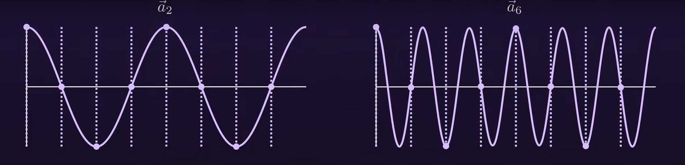
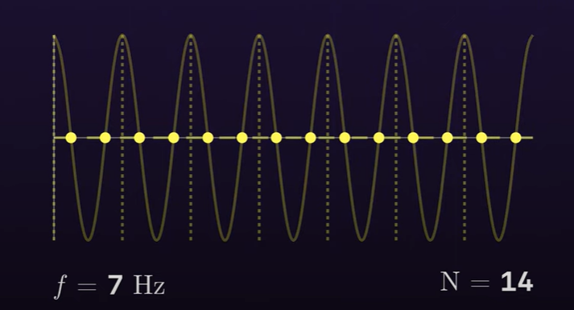
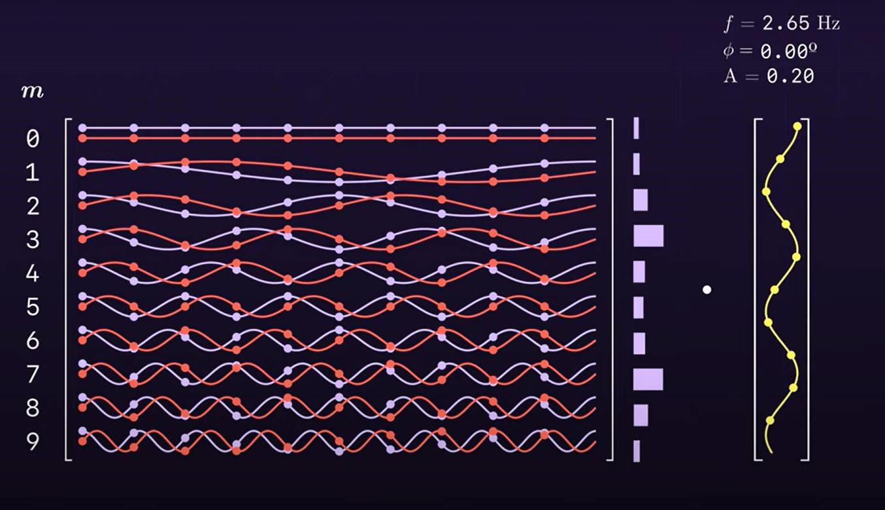

离散傅里叶变换
Great Dicrete Fourier Transform
我曾仗着学过点傅里叶级数，看了两眼DFT公式后就自认为已经基本掌握了这个算法。如今回忆起来，实在是傲慢的很。实际上DFT的公式中蕴含着很深厚的道理，如果不仔细研究，会错失非常重要的细节。
Part1: 采样定理
现实的信号都是连续的，而计算机是无法处理连续信号的，信号处理中是经常使用的就是离散傅里叶变换。
为了理解离散傅里叶变换，先来看看香农-奈奎斯特采样定理是非常有必要的。首先要知道，为了获取计算机能够处理的离散信号，就必须要对信号源进行采样，每隔一段时间，获取信号对应时间的强度。至于每隔多长时间进行采样，或者说一秒内进行多少次采样，这是我们需要考虑的第一个问题，采样频率的设置。
对于频率为f的信号（此处假设我们并不知道信号中实际包含哪些频率。如果我们想对信号中频率为f的信号进行分析，那么我们可以假定信号中存在频率为f的信号，接着进行分析），那么根据采样定理，我们需要采样频率\(N>2f\)。
另一种表述是，如果我们的采样频率为N，那么我们能够从信号中正确分析得到的最高频率是\(f<\frac{1}{2}N\)。这一表述很重要，后续需要用到。
（由于人耳能听到的最大频率是20khz左右，所以很多采样率都是44.1khz。）
Part2: 傅里叶变换
关于傅里叶变换的一种常见说法是：傅里叶变换能够将信号从时域变换至频域。我一开始觉得这个说法着实有些抽象，毕竟在未掌握这个变换之前,我只学习过位于时域的正弦和余弦信号。而且因为信号只有一种频率，就算只有时域，频率的概念也是比较鲜明的。因此，对我来说，时间和频率这两个概念是共存的。所以将信号的从时域变换至频域这个说法一时难以理解，也就不足为奇了。我们不妨暂时忽略这个说法，等回过头再来看看，这个说法就不难理解了。
Part3：各频率含量
我们先来想想如何能够获得一个信号的频率信息。对于普通的正弦和余弦的信号，那是比较简单的，利用信号的周期就能够直接算出来。但是对于一个混合多种频率的信号，该如何判断信号是否包含某一频率，以及其含量呢？这时候其实是无法依靠信号周期来判断的。
其实DFT使用的是向量内积来判断信号是否包含某一频率的。我们需要按行来看DFT矩阵的每一行。DFT的各个行向量代表了不同频率的单一频率信号，与离散信号向量作内积，获得了一个能够代表该频率含量的值。DFT中各个行向量都是用复数表示的。这里为我们为了方便，先考虑实部，也就是余弦部分。例如对于一个振幅为2，频率为2hz的余弦信号进行采样，我们使用的采样率为8hz，那么我们会获得8个离散信号数值，记信号向量为f。那么DFT矩阵中代表2hz的行向量与f作内积，我们会获得该余弦信号的含量。这个含量值其实是对应频率振幅值的一半。
（在连续傅里叶变换中，\(\frac{1}{2\pi}\int_{-\pi}^{+\pi}cos2x\cdot Acos2x=\frac{A}{2}\),就会获得余弦信号的振幅值的一半。不过0hz的时候，是直接能够获得“振幅值”的，其实也不能称之为振幅。）。
通过内积，我们得到一个非0数值，进而能够判断信号是包含2hz的频率。那么DFT矩阵中其他频率的行向量与f的内积会是多少呢？我们采集的是2hz的余弦信号，所以我们希望其他的内积是0。
函数正交
First:
\(\frac{1}{2\pi}\int_{-\pi}^{+\pi}cosmx\cdot cosnx=0,\)
\(\frac{1}{2\pi}\int_{-\pi}^{+\pi}sinmx\cdot sinnx=0,\)
\(m\neq n且m,n\in Z\)
Second:
\(\frac{1}{2\pi}\int_{-\pi}^{+\pi}cosmx\cdot sinnx=0\)
\(m,n\in Z\)
Third:
\(\frac{1}{2\pi}\int_{-\pi}^{+\pi}cosmx\cdot cosnx=\frac{1}{2},\)
\(\frac{1}{2\pi}\int_{-\pi}^{+\pi}sinmx\cdot sinnx=\frac{1}{2},\)
\(m=n且m,n\in Z\)，
这个在傅里叶级数推导中曾经用到过，至于离散的情况下怎么证明，我也不会。）
各频率含量的计算
我们进行计算的话，会发现计算结果如下：
N=8时
0hz：0
1hz：0
2hz：1
3hz：0
4hz：0
5hz：0
6hz：1
7hz：0
N=10时
0hz：0
1hz：0
2hz：1
3hz：0
4hz：0
5hz：0
6hz：0
7hz：0
8hz：1
9hz：0
我们能够看到6hz也会计算出非0的数值，这并不符合预期。此外我们发现1-3hz（从上往下）的计算结果与7-5hz（故意倒着的，从下往上）的计算结果完全一样（模一样，即频率含量），竖着看的话就是一个以4hz为原点的镜像。（0hz不包括）
为什么除了2hz，6hz也有非0值呢（其实计算其他的单一频率信号的变换后会发现，这种镜像是普遍存在的，而且镜像的数值也是一样的）
此时需要回过头来看最开始提到的采样定理。采样定理告诉我们采样频率为N时，我们能够从信号中正确分析得到的最高频率是\(f<\frac{1}{2}N\)。此处采样频率率是8hz，也就是说我们计算出来的各频率信息中，只有1hz,2hz,3hz是可靠的，其他频率则由于混叠，一种由于采样不充分导致的现象，错误地计算出非0值。之前提到的连续情况的函数正交，可以视作采样率为无穷大时，必然不会出现混叠。但是实际应用中必然不会有无穷大的采样频率。此时再看采样定律的第一种表述，对于信号中的频率为f的部分，我们需要采样频率>2f才能避免混叠。但是我们的采样频率为N时，所采集到的N维信号向量，就必定要与N*N的矩阵相乘，那么得到的N个各频率含量值实际上只有0~\(\frac{1}{2}N-1\)的分量是有用的。
混叠
以之前的余弦信号为例子，混叠的表现形式为我们采集得到的余弦信号离散点与矩阵中的高频向量点分布位置完全一致，例如采样信号中的cos2x的离散点会与DFT矩阵中cos6x离散点位置分布一致（指时间位置分布一样，信号强度值未必是相同的），因此我们得到了非0的结果。采样信息不充分体现在，我们没有采集到能够抵消非0部分的点，比如此处cos2x只采集了8个点, 此时就会产生如下图的效果。

如果我们提高一倍采样率，采集了16个点的话，那么此时得到的信号向量与矩阵中cos6x的16维行向量的内积就会为0。
如果分析的是正弦信号的，那么情况只是略有不同。只看DFT矩阵的正弦部分的话，信号sin2x的离散点与DFT矩阵中的sin6x的离散点并不相同，不过sin2x的离散点分布与DFT矩阵中的-sin6x的离散点分布是相同的。
0hz
为什么要特地划分一个0hz。如果我们的余弦信号是这样的话：y=cos(2x)+b，那么0hz对应的大小，就是b的大小。
与0hz相关的，还要提一下4hz，4hz一般情况下对应的含量数值为0。但是如果采样碰巧都采在了横坐标轴上，像下图的例子中采样率为14hz，信号频率为7hz

看起来和0hz的分布一样，计算其含量会发现和0hz对应的含量一样。这也可以理解为4hz和0hz混叠。不过出现这种情况是比较少见的，因为信号采样得到的信号一半都是带有相位的，此外因为和其他频率分量正交,所以\(\frac{1}{2}N\) hz的含量大部分情况是0。
Part4：信号的相位
目前已经考虑到的有信号的振幅，信号的频率，还有b(纵坐标偏移)，那么最后要考虑的就是信号的相位了，这也是DFT公式中我觉得最难理解的一部分。我们知道DFT中的频率分量采用的是复数，那么为什么要使用复数呢？从之前的分析来看，似乎使用余弦函数来作为各频率分量，算出内积也是可以分析信号中各频率的含量的。而事实上并非总是如此顺利。如果我们仅仅使用余弦部分作为DFT矩阵中的各频率分量，而分析的对象是正弦波信号时，那么我们会发现DFT矩阵的各个行向量与正弦波信号采样得到的向量的内积都为0，这倒是并不奇怪，因为正弦波与余弦波总是正交的。参考之前列出的公式\(\frac{1}{2\pi}\int_{-\pi}^{+\pi}cosmx\cdot sinnx=0，m,n\in Z\)
离散情况下当然也是正交的（不过我不会证明。至于混叠，在这里并不需要担心。低频率部分全是0，可能出现混叠的高频部分自然也全是0。）
如果我们将DFT矩阵中的余弦波替换为正弦波，那么就可以顺利得到正弦信号中的频率含量了。也就是说正弦信号的分量只能在正弦DFT矩阵中获得，而余弦矩阵的分量只能在余弦DFT矩阵中获得。那么如何能够将二者合并起来呢？答案就是复数矩阵！
这时我们再来考虑这么一个包含相位的信号，\(Acos（2x+φ）=cosφAcos2x-sinφAsin2x\)，这个信号可以视为既包含余弦信号也包含正弦信号。此时我们需要考虑如何能够同时获得cos2x的频率含量以及sin2x的频率含量，即cosφA和sinΦA，取其平方和便是真正的A！还可以注意到的一点就是\(tan\phi=\frac{sin\phi}{cos\phi}\),体现在复数坐标轴上的话，相位φ其实就是复数的辐角。
。复数频率分量既包含余弦分量，也包含正弦分量。
采用复数分量的时候，我们得到的各频率含量是一个复数，该复数的实部是余弦信号的含量，虚部（其实是虚部的绝对值，因为变换中有个tricky的负号）是正弦信号的含量。注意，内积计算出来的含量并不直接等于cosφA和sinφA，而是等于一半。（连续情况也是如此，这个并非混叠的影响）。
关于逆变换：(Reducible视频中提到的虚部cancel out，应该指的是使用逆变换中的计算发生的情况)
虽然逆变换的矩阵和原来的矩阵几乎完全相同，但还是有一点要注意的 ， 那就是一定要看矩阵的列向量，傅里叶矩阵时对称矩阵，所以矩阵竖着横着看都一样，但是看列向量的思路却是不一样的。以列向量来理解DFT矩阵的话，那么逆变换的操作就是，利用各频率含量乘以各频率分量从而还原出原来的信号。（有点像从傅里叶级数的右边看向左边，用各个频率的正弦和余弦函数拼回原来的函数。）
借由各频率含量还原信号时的运算中，由于含量是个复数，因此乘以矩阵的对应频率分量时，会存在无法消除的虚部，而这部分对于还原信号是没有用的。而此时，原来并没有什么用的混叠频率含量，在计算中会出现，可以用来抵消虚部，立大功！
记f[n]为DFT计算得到的结果，包含各频率含量的向量；
记s[n]为采样得到的离散信号，包含各时间点的信号强度。
\(f[2]=a_{2}+b_{2}i,f[6]=a_{6}+b_{6}i=a_{2}-b_{2}i\)
\(s[2]=\sum_{k=0}^{k=7}[(a_{2}+b_{2}i)*e^{(2 \cdot k \cdot \frac{2\pi}{8})i}+(a_{2}-b_{2}i)*e^{(2 \cdot k \cdot \frac{(8-2)\pi}{8})i}]\)
\(=2a_{2}cos(2 \cdot k \cdot \frac{2}{8} \cdot)-2b_{2}sin(2 \cdot k \cdot \frac{2}{8} \cdot)\)
\(=2\sqrt{a_{2}^{2}+b_{2}^{2}}cos(2 \cdot k \cdot \frac{2}{8}+\phi)\)
可以看到f[2]的虚部并不是忠实地显示出离散信号中的2hz的正弦信号的分量的，而是多了一个负号，变成了正的。这个负号是来自变换中的复指数的负号。那么为什么DFT变换的复指数中有负号呢？据我推测，应该为了后面计算逆变换的时候能够抵消正弦分量的虚部相乘时产生的负号。那么为什么不在逆变换中加个负号？因为如果负的正弦分量来还原信号并不合理，毕竟观念上采用的也是正的余弦分量和正的正弦分量进行信号分解，还原的时候当然应该也采用正的。此外，还有一种可能是因为在正变换中稍稍添加个负号影响也不大，毕竟最终计算出来的复数，其实只会去看模，而且还要乘2才是真正的振幅值。
之前提到过相位φ与复数的辐角的联系。如果我们像这样使用余弦的相位，那么可以看到，相位φ的符号其实和f[2]的辐角是一致的。这可能也是DFT复指数中有一个负号的原因。
当知道逆变换计算中，后面的混叠频率能够自动抵消虚部后，我们就可以大胆地省略这部分的计算过程，直接取0~\(\frac{N}{2}-1\) hz对应的复数的实部和虚部的相反数来得到还原的信号。
此时我们能够发现，傅里叶变换能够将信号的全部信息，包括振幅，频率，纵轴位移（对应0hz）和相位的全部信息，从时域变换到频域之中，而且没有任何丢失。这可以作为理解傅里叶变换是一种可逆变换的很好的角度 。
还有一个需要注意的点就是离散傅里叶变换和快速傅里叶变换的关系。FFT之前介绍过的，其实看过就知道FFT并没有分析信号的功能，而是用来加快DFT的计算的一种算法。
Part5：非整数频率信号
如果DFT变换中输入的是非整数频率信号，那么与该频率相近的频率分量对应内积会比较大，其他频率分量对应内积基本上都不为0.我们在之前的余弦正弦函数的内积时，也规定了只能使用整数频率，因此不要认为非整数频率初了相邻频率外的频率含量是0.至于非整数频率信号怎么分析，似乎还有更多的要学，此处就暂时不作展开了。非整数频率的计算结果如图中间部分的柱状图所示：

完结撒花！！！
也可以在这里查看动画教学https://www.youtube.com/watch?v=yYEMxqreA10。没错，本文又是抄的！